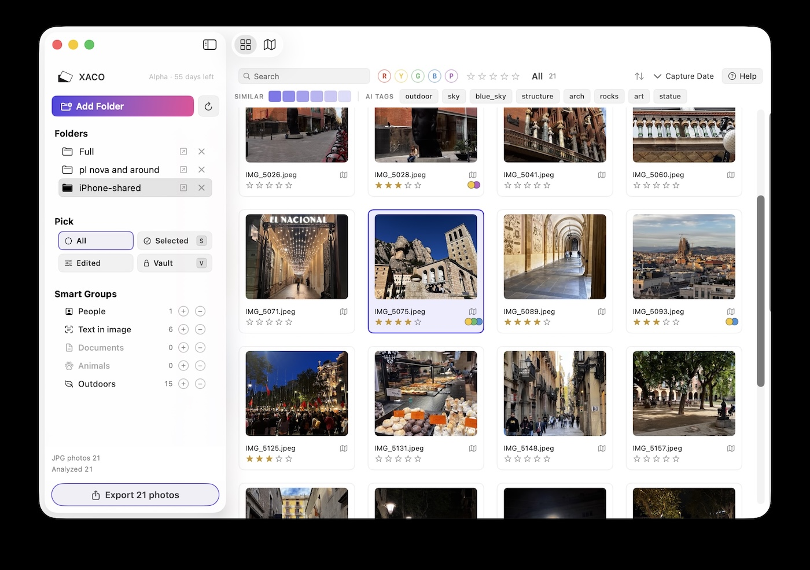
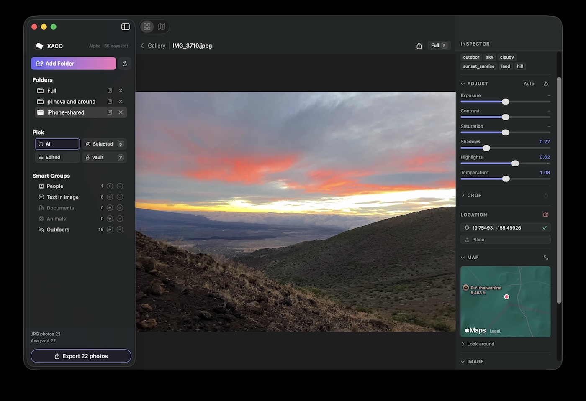

For mobile and SLR shooters with a growing pile of photos. Select, sort, and organize them — fast, on-device, non-destructive.

XACO works with your photos where they already are. It doesn't move them, doesn't delete them, doesn't import them into a proprietary catalog. Open a folder, start working — your files stay yours.
Native Apple Silicon. Folders open immediately. Browsing stays smooth as your library grows.
Rate with 0–5. Color-thread with R/Y/G/B/P. Navigate, search, mark visibility — all without touching the mouse.
Auto-classifies your photos by what's in them. Find faces, scenes, documents, animals — everything runs locally.
Pick a photo and pull up visually related ones at six similarity thresholds. Great for de-duping and curating.
Geo-tagged photos plot to Apple Maps. Browse by place, fix missing or wrong locations, find that trip from last summer.
Vision labels and OCR'd text become searchable tags automatically. Type a word, find every photo it appears in.
Tone, crop, straighten, color — all stored separately from your originals. Versions tracked. Revert any time.
Edits and metadata live in plain JSON files next to each photo. Move the photo, the work moves with it.

Preview pane with the inspector — adjust tone, crop non-destructively, edit location.
Map view — every geo-tagged photo plotted as a thumbnail. Click any pin to peek the photo.
XACO is committed to simplicity, transparency, and efficiency. Nothing is collected, transmitted, or shared — about your photos, your usage, your Mac, or you. The app reads only the folders you explicitly open.
Ratings, color threads, visibility, tone and crop edits, image versions, corrected dates and locations — all written as readable JSON sidecars next to each photo. Inspect them in any text editor. Move the photo, the sidecar travels with it.
AI-derived data (labels, OCR, faces) lives in a local cache for speed and can always be regenerated. Stop using XACO and your work goes with you. Nothing is locked in.
XACO is being built in the open. Your feedback shapes what ships.
Alphas and betas keep coming free until v1 is ready. v1 ships when it's ready, not on a fixed date.
What v1 will look like: buy once, own it. Includes one year of updates and support.
Your photos and sidecar metadata are never affected when an alpha expires.
Download XACO-Alpha-<version>.dmg, drag XACO into Applications, eject the DMG, and launch. Signed and notarized by Apple.